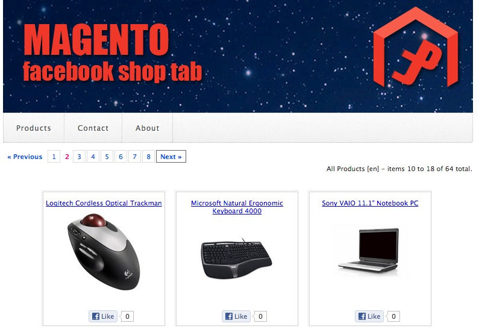

Magento Facebook Shop Tab Application Documentation by PAJ v1.0
Magento Facebook Shop Tab Application
Created: 20/11/2012
By: PAJ
Email: paj@p-a-j.co.uk
If
you have any questions that are beyond the scope of this help file,
please feel free to contact me via email.
Table of Contents
Introduction
Magento Facebook Shop Tab is an object oriented PHP script that integrates with a Magento eCommerce store to render product HTML designed to be displayed within a Facebook page Tab application.
The application can display various product views with a simple
product description popup and link to your actual Magento web store for
purchases.
The application currently only supports normal desktop browsers, IE9,
Firefox, Safari, Opera, Chrome.
Getting
Started
To quickly install and test the application follow these steps
1. Create a new folder in the same location as your Magento store root folder. i.e. if Magento is installed in /home/www/magento create a new folder called facebook in /home/www/magento
2 Copy the application zip package to /home/www/magento/facebook and unzip it. Another folder called magentotab will be created, and the source files extracted into it.
3. Using your favourite text editor edit the configuration files userConfig.ini and applicationConfig.php in YOURPATH/facebook/magentotab/config
userConfig.iniEdit the path to your Magento installation

applicationConfig.php
Edit the path to your userConfig.ini configuration file.
4. Test the application by browsing to the following url -
http://www.MYSTORE.com/facebook/magentotab Where www.MYSTORE.com is the
url of your Magento store. You should see the default view of products
from your Magento store displayed in your browser.

If you see an error message, take a note of the error details and
check your configuration again.
This application requires a configured Facebook Account, Facebook
Page and a configured Facebook Application. A good knowledge of your
Magento installation and Operating System is assumed as well as some
experience with Facebook applications and PHP.
Note that the web server hosting the application should support
HTTPS/SSL connections, the application should be accessible via both
http and https connections as Facebook users who have enabled https in
their security settings will automatically attempt to browse to the
application using https. If this is not supported on your web server
then the connection will fail and the application will not load
correctly.
Installing
as a Facebook Application or Tab
This application is designed to be run as a Facebook Tab app. To install the application into your Facebook page follow these steps.
1. Login to Facebook with an account that has administrative rights
over your Facebook page.
2. Browse to http://developers.facebook.com/
and select Apps from the menu.
3. Click the Create New App button. complete the Create New App form
and click Continue. Follow the security check prompts.
5. Save your new Facebook application and take a note of your Facebook Application ID and Application secret.
6. Edit userConfig.ini again and complete the details of your Facebook application.
Add your Facebook app credentials, ID and Secret. You can add the Facebook URL later.

7. Save the file and browse to the following URL
http://www.MYSTORE.com/facebook/magentotab/?fbtab=true You will see a
link appear "Click here to setup the facebook tab application." Click
on the link to install the application into a Facebook Page tab. Choose
the Facebook page that the tab should appear on and click
Add Page Tab.
8. Goto your Facebook page and confirm that you now have a new Magento Store Tab. Click the Tab to view your Magento store.
Configuring
the Application
There are other confiuration settings in userConfig.ini that you
might want to change.
To display a menu on the product page set the showMenu setting to true.
Depending on traffic and your hosting etc. the application may run
faster when the menu is disabled.
To exclude categories from being shown in the product menu, configure
the excludedProductCategories setting with a list of category id’s
separated by a comma, e.g.
excludedProductCategories='4,5,16,17,18,19,22,23,25,27,28,29,30,31,32,33,34,35,37';
For google UTM tagging configure the googleUTMTag setting with a valid
Google UTM URI.
The bannerImage setting holds the name of the graphic file used as the
banner at the top of the Facebook Tab page.
Set the productLimit setting to define the number of products that will
appear per page. This should be divisible by 9.
Set the defaultCollectionType setting. This defines the default product
view that will be shown. Options are
newfromdate - Products set with the NEW FROM attribute - i.e. New
Products.
allproducts - All Products
categoryproducts - Products from a category.
Determine which product description will be shown for the product
useShortDescription=true - Use short description
useLongDescription=true - Use long description
Configure language options
storesConfigured='1,2,3';
storesLanguage='de,en,fr';
storeDefaultLanguage='en';
In this example there are three stores configured with the id’s 1, 2
and 3. The store languages for store 1,2,3 are de, en, fr - German,
English, French. And the default language is ‘en’ - English.
The showContact setting enable a Contact form on the menu when set to
true.
The allowStandAlone setting lets the application run in a standalone
browser when set to true. When set to false the application will
redirect to the Facebook URL of the app. Set to true for debugging the
app standalone outside of Facebook.
Set the pageLikeRequired setting to true if visitors must first Like
the Facebook page the tab is running in before they can access the
application.
Set the URIToApp value to the URI path of the app on your server.
Save the configuration file. You can rename this file, or store it in
another location. This will preserver your configuration settings
during upgrades to the application.
Ensure that the path in magentotab/applicationConfig.php -
userConfigurationFile constant matches the path to your configuration
file.
Language Support
There are other confiuration settings in userConfig.ini that you might want to change.
To translate some of the interface text used in the application to your language, simply create a new language file in the php/locale folder named XX.txt where XX is your two letter language code. Use an existing language file as a template and add your translations to the file in the formatText=TranslatedText.
Make sure your language settings are configured correctly in the application. You can force the application to the language you want using the storeid variable in the url
i.e. http://www.YOURSHOP/facebook/magentotab/?storeid=2
Will force the application to the language configured for store id 2.
Please do not hesitate to contact me for further help and assistance.
PAJ